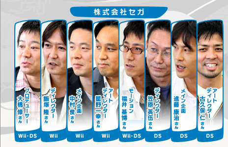
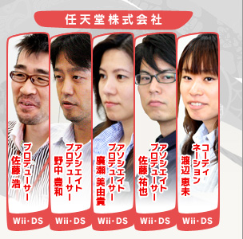

――
続きまして、DS版の特徴をお聞かせください。
笠原：
北京の時は基本的にWiiとDSは同じような内容で簡単にオリンピック競技が遊べるゲームとして制作しました。ただ今回はWiiとDSの内容を完全に差別化しています。まず、ひとりで長く遊べる「アドベンチャーツアーズ」というRPG的なモードを入れました。また、DSならではの対戦プレイを楽しめるように、すべての競技をDSダウンロードプレイの機能を使って、ソフト１本で多人数プレイができるようになっています。
――
ゲーム的にアドベンチャーツアーズの追加はかなり大きな要素ですよね。
笠原：
マリオとソニックは前回の北京で共演を果たしましたが、そんなにからむ部分はなかったんです。そこで、今回のアドベンチャーツアーズでは冒険に出て実際に会話をするシーンを作ろうと。ところが、最初に任天堂さんから「操作キャラクターはプレイヤーの分身なので、今回操作キャラクターであるマリオが、プレイヤーの意思と反して勝手に話をするのは違和感があるため、基本的にはしゃべらない様にしてください」と言われて出鼻をくじかれてしまいまして（一同・笑）。マリオはしゃべらないけど、出てくる相手はマリオのことを知っていてしゃべってくるという形で、セガのキャラクターとマリオの会話シーンをほのぼのと面白おかしく作ってみました。また、マップ上を自由に動けるんですが、要所要所に立っている看板に書かれているミッション（競技の一部をピックアップしたミッションミニゲーム）をクリアしてストーリーを進めていきます。前回は順番にミッションをクリアしていくだけだったんですが、今回は謎解きをしたり、アイテムを探したりと、継続的に遊べる内容を目指しました。
佐藤祐：
音声ひとつ取っても、マリオとソニックは全然違うんですよね。ソニックは日本語でしゃべるんですけど、マリオは「ハハーン」とかなので。同じ画面にいる不思議さというのは何とも言えないところがあります。
進藤：
セリフを考えはじめた時にも、例えばキノピオはソニックのことをどういう風に呼ぶんだろう、「さん」付けなんだろうか？ とか悩みはじめまして。まず呼び名の対照表を作ろうということで、任天堂さんとわれわれでそれぞれ確認したりもしました。
渡辺：
ここは呼び捨てにして良いのか、敵対しているのかそうでないのかみたいな（笑）。
――
タッチペンを使った操作もDS版の大きな特徴かと思いますが。
笠原：
冬季競技はスキーで斜面を下るアルペンですとか、スノーボードでも斜面を下ったりですとか、見た目が似たようなものも多いですよね。そこはあえてタッチペンとボタンに分けて、まったく違った遊び方になるようにしました。前回はタッチペンとボタンを併用する競技を何個か作ったんですが、今回は競技によってタッチペンだけを使うもの、ボタンのみを使うものとシンプルさを心がけました。
野中：
オリンピックの競技をゲームにするのは、ルールは決まっていますし、制約も多いため難しいと思うんです。その限られた制約の中で、面白く、そして奥の深い操作方法にするという事が大事なんです。面白くないからといって、競技ルールを変えるわけにもいきませんから。そういった意味では、セガさんには大変ご苦労をいただいたと思いますし、良い着地点を見つけられたのではないかなと。
笠原：
任天堂さんに見ていただいた時に、これはボタンの方が面白いんじゃないかとか、上画面でなく下画面を使った方がいいんじゃないかとか、こちらがまったく想定していなかったご意見・ご指導をいただきまして。スケジュールがあるんで口では「今からですか？」とか言うんですけど、確かにそうした方が面白くなるだろうということなんですよね。クリエイターとしてはわかっていることなので、進藤やチームのメンバーとも、これはできる限り対応しようと……頑張りました（笑）。
野中：
ミーティングで重い空気の時もあえてKYになって言いたいことを言っていたのが結果的に良かったとは思うんですが、今思うとすみませんでした。
笠原：
任天堂さんのゲームが面白いのは、やはり妥協しないでこれだけ突き詰めてやっていらっしゃるからなんだなと実感しました。重い空気を出して、やはり壁は作っておかないと、何でもハイハイと言うのでは私の立場上まずいので（一同・笑）。